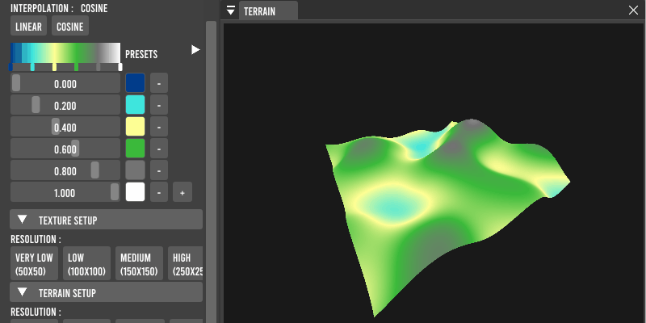

Palette de couleurs
Une interface permet à l’utilisateur de selectionner une gamme de couleur et même de positionner chaque couleur afin d’avoir le rendu de texture attendu. Ici, on a par exemple un rendu faisant penser à une vue aérienne.
Terrain
La texture générée peut être visualisée en 3D (terrain). L’amplitude du bruit peut être modifié afin d’obtenir de plus grandes montagnes.

